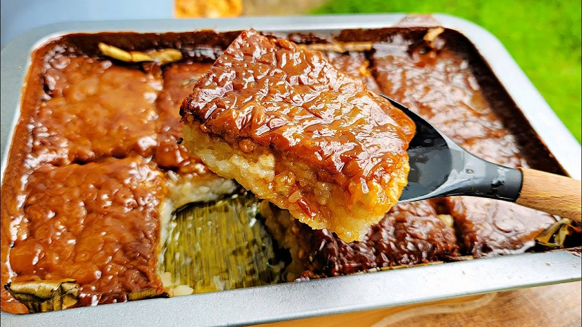

Bibingkang Malagkit

"A sweet, creamy, and chewy Filipino dish rice cake made of made of glutinous rice, coconut milk, and brown sugar"
Ingredients
- glutinous rice or malagkit
- coconut milk
- water
- sugar
- salt
Steps
- Cooking the Sticky Rice
- Steam the glutinous rice until it is partially cooked, as it will finish in the sweetened cream mixture.
- Do not skip the salt, as it helps balance the sweetness and richness of the rice cake.
- Use a wide non-stick pan to make stirring easier. Please do not leave the rice mixture unattended for long periods as it can burn in the bottom quickly.
- The sweet rice mixture is ready when it begins to pull away from the sides of the pan.
- Making the coconut topping
- The caramel sauce is pretty easy to make but does take time to thicken. Make it in another pan simultaneously with the rice mixture so they'll finish congruently. Or you can prepare it a day before and store it in the refrigerator in a covered container.
- Use a wide shallow pan instead of a deep saucepot for the excess liquid to evaporate more quickly. Choose a non-stick material to make stirring easier.
- The coconut caramel is ready when it's thick enough to coat the back of the spoon.
- Assembly
- Since we are not making latik here, use melted butter to grease the baking pan. If you have coconut oil on hand, so much the better! You can also line the baking dish with wilted banana leaves for added aroma.
- Spoon the caramel topping on the rice cake and spread it evenly to cover the cake completely.
- It is optional to bake the after assembling the ingredients.